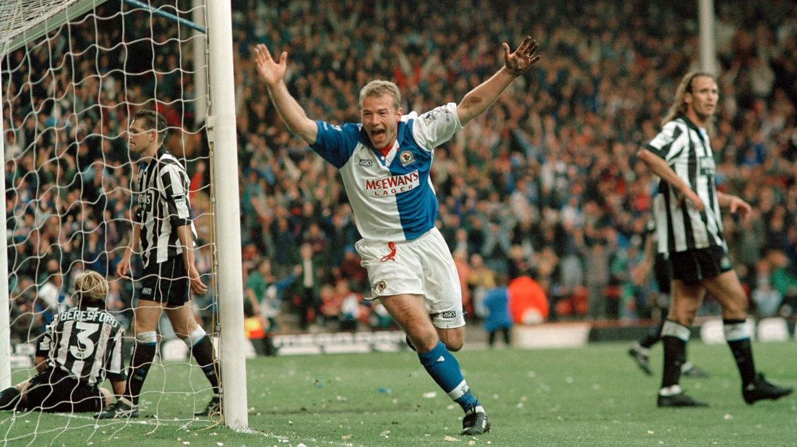

<!DOCTYPE html>
<html lang="pl-PL>
<head>

<meta http-equiv="Content-type" content="text/html; charset=UTF-8" />
<meta http-equiv="Content-Language" content="pl" />
<meta name="Author" content="Aleksander Żuk" />
<title>Piłka nożna okiem amatora</title>


<link rel="stylesheet" href="css/style.css"/>
</head>

<body style="background-color:lightgray;">

<div id = menu>
<table>
<tr>
<th> <a href ="index.html"> Menu </th>
<th> <a href ="html/Na2Nozke.html"> Na2Nóżkę </th>
<th> <a href ="html/PremierLeague.html"> Premier League </th>
<th> <a href ="html/MlodePerelki.html"> Mlode Perelki </th>
<th> <a href ="html/oMnie.html"> O mnie </th>
<th> <a href ="html/kontakt.html"> Kontakt </th>
<th> <a href = "html/java.html"> Java </th>
</tr>
</table>
</div>


<h1> <i> Piłka nożna okiem <b> amatora </b> </i> </h1>
<h2> Ciekawostki i opinie o świecie futbolu </h2>




</body>
</html>
